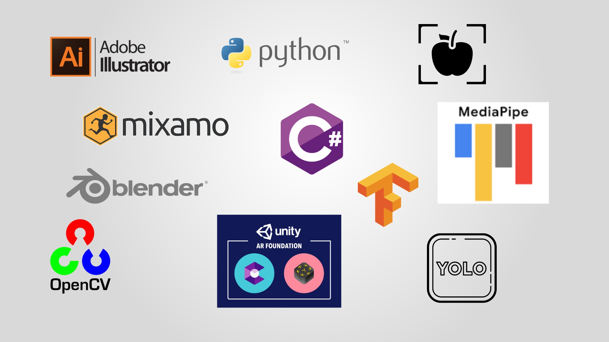

During the preschool years, which encompass the first six years of life, kids must inquire about and search for their environment, move, explore, discover new things, and play games. Satisfying this need implies acquiring the information, skills, attitudes, and habits that will constitute the basis for kids’ life.
The sort of time spent with children has been favorably associated with their educational and cognitive results. However, the conflicting time demands of parenthood and employment make it difficult to establish a balance between work and family time. When parents use their professions to show a positive relationship with their phones or tablets, they will have a much easier time educating their kids on utilizing smartphones efficiently. Due to these issues, there was a need of specific applications that are appropriate for kids.
Kid’s mobile applications concept have been growing globally for decades. These applications can be divided into Game-based Learning (GBL) Apps for kids and kids' mobile games Apps. Parents strive to advance their children's education and knowledge from an early age. As an outcome, GBL applications play a major role in application stores that are designed specifically for preschoolers and in-demand of the two categories described previously.
GBL is an innovative teaching approach that reinforces development and learning through gameplay. Numerous experts now believe that gamification in education can more effectively encourage today's entertainment-driven learners to participate in learning more deeply using meaningful storylines and game-play activities defined within the game design context.
Nowadays, children represent a generation that grew up with computers, tablets, and internet access. Marc Prensky called this generation “digital natives”, acknowledging that digital language is an essential component of their life and that it has the potential to alter their thinking patterns. GBL apps are one sort of entertaining multimedia content developed to support digital natives’ educational necessities, and these applications are used to give education effectively and in a systematic context, such as a preschool, which seriously influences a child’s future life. That is why many researchers have tried to create a better kids GBL application.
In terms of E-learning concept, there are typically three major components that directly influence the development of E-learning applications: kids, technology, and educators(guider). Design procedures, teaching-learning methodologies, and content are all conditioning aspects for learning in terms of technology. In terms of design, pedagogical applications for children must use graphics and actions that provide context; they must use simple and clear instructions, based on images; they must have an intuitive interface and interactivity for independent use, but also a challenging approach with multiple opportunities for success, to maintain interest. GBL apps which are developed in accordance with above terms have been popular among kids for decades, relying solely on same technology.
However, these apps do not appear to be up to date with existing technical features. In addition, the homogeneity of the activities associated with these applications is now negatively highlighted. As a result, today's digital natives are heading back from these tedious apps, as well as tending to waste their time on other platforms. Recent studies indicates that whatever the digital media content used should be age-appropriate and meaningful to children, allowing them to explore multiple areas: intellectual, physical, and emotional while providing opportunities to enhance learning with extra-curricular activities. In fact, the question is to what extent this requirement is covered by existing game-based E-learning applications.
One of the best approaches to teaching preschoolers is making them interact with natural objects. Augmented Reality sub-system of proposed system Brainy allows kids to relive the excitement and experience something they have never had before or rare to have around their homeplace(e.g., Lion and Airplane ) by replacing the existing world with a simulated one or virtual contents such as 3D Objects data into real-world at real-time. Using this technology (e.g., AR Core) allows kids to play and interact with 3D characters and objects with curiosity. This experience can assist kids in developing skills, primarily visual perceptual skills, and memory and retention.
The Brainy e-learning application, which is proposed, is designed with many more functionalities than other research which are currently prevailing. By the proposed solution, the "Brainy" would suggest an object detection and recognition subsystem that includes letter and drawing identification technology, object detection technology, and object labeling technology. these technologies are introduced to improve real-world interaction and improve visual perceptual skills and memory of children.
The pose detection sub-system of proposed brainy application is designed to incorporate a number of features into a Kids learning application, such as pose detection missed by previous researchers. In fact, pose detection technology was used for games like [8] but it was not used for kids learning application development. That's about what this sub-system is going to fill. This gives the child the foundation they need to be strong both academically and physically. Because the future needs strong young people, not the sick.
The E-learning, which is proposed, is designed with many more functionalities than other research which are currently prevailing. Solutions will be suggested to reduce the phone addiction of children through the Brainy application. Attempts have been made to motivate children to engage in activities with the external environment. attempts have been made to provide quality education to the child through voice recognition technology. this voice recognition technology primarily checks the children pronounce the words correctly.
Children are part of a generation that grew up with computers and iPads, as well as internet access. There has been a growing social discourse over the years that children should be kept away from technology to some extent. This is a significant societal issue. However, in today's fast-paced and digitally advanced environment, it is both essential and detrimental to children's well-being to take this step. Despite this, various e-learning tools, including game-based applications, have been developed to aid in the development of children's minds and education. Their applications do not appear to be technologically updated, and these solutions have remained consistent for a decade, solely avoiding technological advancements.
Additionally, because these e-games focus exclusively on images, there is a shift away from physical activities, crucial for children's brain development. On the other hand, the use of 2d technology is currently being utilized to teach kids about subjects they would not be exposed to on a daily basis in the real world. However, this is limited to the features specified by the application's writers. More significantly, despite several applications being used to teach children songs, vocabulary words, and letters, they do not verify the accuracy of the children's feedback and responses, such as accurate word pronunciation. As a result, a design that aids preschoolers in developing their minds or enhancing their education through seamless integration of technology and real-world activities is necessary. There is no correlation between game content and the real world or physical nature of any objects. Allowing children to interact with natural items is a highly effective method of educating them about the world. Besides, even if no technology is used, there is no way to prevent memories from fading. On the other side, via the use of augmented reality and technology, children may be able to relive the excitement and adventure, something they have never experienced before.

Augmented Reality
1.Modelling of 3D models of the characters and objects
According to the game's story mode, each chapter and task may contain a significant number of 3D objects and characters. These interactive storytelling characters will engage with pre-school player throughout the game, stimulating their curiosity in the narrative. Each storyline may include a series of activities that use these generated 3D objects, such as vegetables and fruits, as well as characters, such as gaming characters and animals. This will provide children with an opportunity to experience or explore something they have never had before.
2.Create various assessments under game storyline that allows kids(player) to interact with created models and learn.
Sorting objects activities, Identifying objects/characters activities, Puzzle activities, Mathematical activities, Scientifical activities, Storytelling
3.Integrating and training 3d models according to activities
All 3D models must adapt to the game's contexts. This application must complete an essential factor: training these 3D models to engage with the device's gesture system, make animation for each movement.
4.Integrating and training 3d models according to activities
Aforementioned, 3D characters are interacting with the player 3D characters must be embedded with audio for each task frame by frame.
5.Integrating and training 3d models according to activities
In this sub-objective, all the 3D elements and training records must be integrated with the unity game engine, and this is where the main AR game functions will be implemented and programmed according to game levelling system and the game scenario.

Object Detection
1.Implement an objects detection and recognition component
Object detection and recognition act as a combination of image classification and object localization. Initially, it takes an image as an input using a device camera after that it starts to process the captured image and produce a bounding box to detected objects.
Activities which are based on object detection in “Brainy” e-learning game, are used to detect and recognize items in a still or moving scene and identifying objects in their living environment.
2.Design letters and drawings identification system.
letters and drawing identification camera-based technologies are used to recognize kids' academic activity. such as letters and drawings written or drawn on a piece of paper.
3.Adding knowledge for kids to understand what they are seeing
This sets the label for objects identified by the object detection component. Also, the labeled name is presented by voice recognition technology. And This allows the kids to gain a better understanding of the materials presented by the activities of the game in which he or she is playing.
4.Creating object detection-based activities.
Object detection is a subsystem comprised of several actions. These activities are classified into a few categories. all categories are needed to design for the system to perform object detection-based activities.
Pose Detection
1.Creating an activity set
Pose detection is a subsystem comprised of several actions. These activities are classified into numerous categories. They are indeed.
1.Activities involving gestures.
2.Exercises.
3.Exhibiting things visually.
4.Activities entailed some degree of movement.
2.Implementing an algorithm to detect poses
As previously stated, the pose detection subsystem is composed of a variety of functions.This algorithm's primary objective is to discover Exercises and Activities that need some degree of movement and to validate their accuracy.For instance,
1..Jumping
2.Take a seat in a chair.
3.Fly
4.Run in a straight line
3.Implementing an algorithm to detect gestures and hand movements
This algorithm's primary objective is to discover Activities involving gestures and Activities that Exhibiting things visually and to validate their accuracy. For instance,
1.Show count using hand
2.draw shapes by hand
Voice Recognition
1.Identify correct pronunciation
This determines whether the child is accurately speaking the words. If a child does not pronounce a word correctly, this approach will teach them how to do so.
2.Detect spelling correctness
This is determined by the activity and is used for things like alphabet practice. This function verifies the validity of the specified letter.
3.Identify number count
This verifies the accuracy of the child's numbers. Provides a number-related activity for the child. Verifies that the provided response is correct.
4.Recognize song while kids are singing
2. This enables the child to sing a song and verifies that it was appropriately sung.
The main purpose of Brainy application is to create and
deploy a game-based e-learning application for children that
allows them to gain more knowledge in the most
straightforward manner possible while also interacting with
the real world in accordance with the four primary
technologies:
1) Augmented Reality
2) Pose Detection
3) Object Detection
4) Voice Recognition
This application aims to give children comparable
experiences instead of squandering time, allowing them to
commit some of that time to study and enhance their
academic opportunities. Therefore, our purposed solution in
is to help develop the child's mind or boost their
education via newer activities (based on or required to
perform real-world activities/ physical movement) by
utilizing a specific combination of technology in a
controlled environment.

As shown in above, this mobile GBL app is
based on storylines (e.g. Story of The Tortoise and the Hare
) Each storyline is classified into different chapters, each
containing numerous distinct activities: voice recognitionbased activities, object detection-based activities,
augmented reality-based activities, and pose detection-based
activities. Activities under specific chapter focuses on a
teaching and enhancing the knowledge under a certain
subject/ skill (Mathematics, Science, Language and Visual
perceptual skills etc.)
After that, the following step consisted of designing
each activity utilizing each concept. To ensure the reliability
of the system design, we followed the methods
outlined in Section IV and shown in the picture below.

